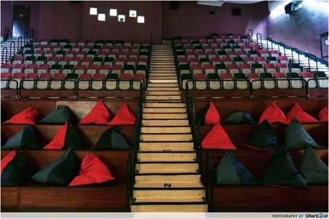

The Projector revives two cinema halls and the 5th floor foyer of the historic Golden Theatre as an independent cinema and creative platform that brings together a great selection of films, one-of-a-kind events, versatile spaces and delectable fare.
WATCH – Be spoilt for choice with specially curated programmes that showcase indie, foreign, cult favourites, classics, arthouse, horror, local flicks, retrospectives and special themed nights.
A single screen classic cinema hall with 230 seats, the Green Room will be the main screening hall for films curated by The Projector. Besides being redesigned as a versatile events space, the Redrum (pronounced “red room”, inspired by Kubrick’s The Shining) will also be the home to many awesome events!
EAT – At the foyer, the new Intermission Bar serves popcorn, coffee, draft beer, and hybrid menu of other awesome noms – don’t forget to also tune in late at night on weekends for a great mix of live bands and DJs!
